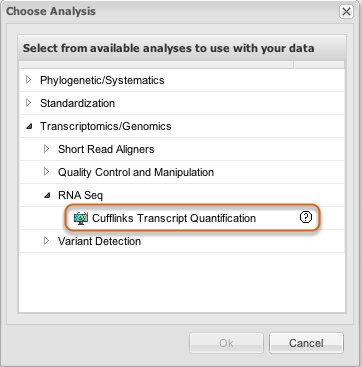

This analysis uses Cufflinks.

Select Cufflinks Transcript Quantification from within Perform Analyses as described in that section. Click Ok.
Select SAM File(s)
Click Add to choose your previously uploaded SAM file(s).
Select Reference Annotation
Select the reference genome.
Parameters (part one)
Select your desired parameters (continued in following image).
Parameters (part two)
Click Launch Job.
Enter a name and description for the job and click Ok.
See Perform Analyses for information about monitoring the process and where to find your results.